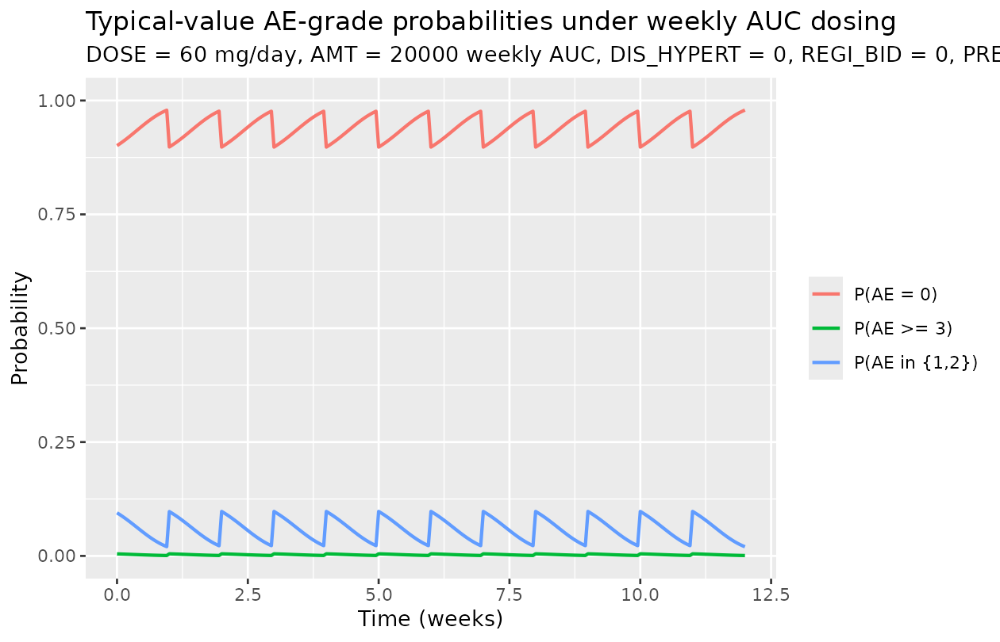
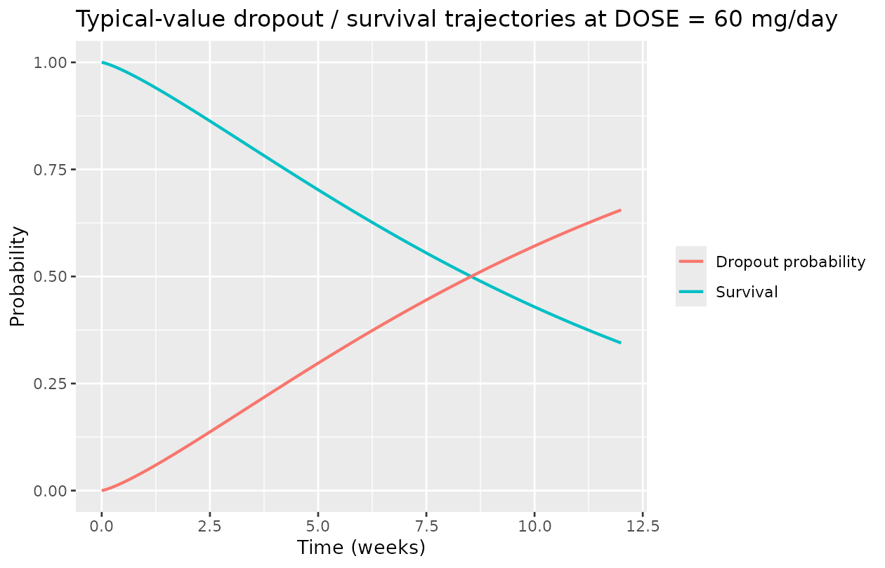
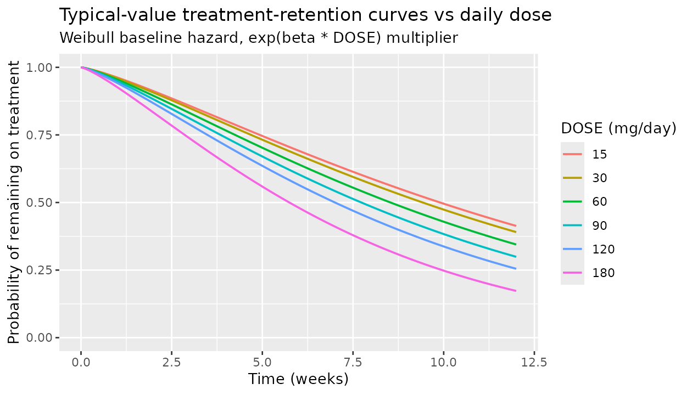

Girard_2012_pimasertib
Source:vignettes/articles/Girard_2012_pimasertib.Rmd
Girard_2012_pimasertib.RmdModel and source
- Citation: Girard P, Brockhaus B, Massimini G, Asiatiani E, Rejeb N, Rajeswaran RA, Lupfert C, von Richter O, Munafo A. (2012). Simultaneous ocular adverse event and treatment discontinuation model of pimasertib. PAGE 21 Abstr 2458.
- Conference abstract URL: https://www.page-meeting.org/?abstract=2458
- DDMORE Foundation Model Repository entry: DDMODEL00000215
This is a joint kinetics-pharmacodynamics (K-PD) /
cumulative-logit Markov / Weibull-time-to-event-dropout model
for ocular adverse events (AEs) and treatment discontinuation in
advanced-cancer patients dosed with the MEK1/2 inhibitor pimasertib in
two phase I dose-escalation studies. The publication is a PAGE
conference abstract; the full poster is not reproduced here. The DDMORE
bundle ships the model as
Executable_Pimasertib_AeDropout.mod plus a 199-subject
(8588-row) simulated dataset.
Population
- 199 subjects pooled across two phase I dose-escalation studies in advanced solid tumours and hematological malignancies.
-
3655 observations of CTCAE ocular-AE grade (DVID ==
2 rows after the source
IGNORE(DVID.EQ.3)filter), per theOutput_real_Pimasertib_AeDropout.lstrun header. - Daily dose range 1-255 mg pimasertib (orally; QD or BID schedules pooled across the two studies). Observed daily-dose values in the bundled simulated dataset: 1, 1.5, 2, 2.5, 3.5, 5, 7, 14, 16, 28, 30, 45, 46, 60, 68, 84, 90, 94, 120, 150, 195, 255 mg.
- Demographic detail (age, weight, sex split, race/ethnicity) is not derivable from the DDMORE bundle. The linked PAGE 21 abstract (URL <www.page-meeting.org/?abstract=2458>) is conference-abstract-only and was not on disk at extraction time, so a full demographic cross-check was not performed.
The metadata is queryable programmatically via the model file’s
free-floating assignments before ini():
mod_fn <- readModelDb("Girard_2012_pimasertib")
print(class(mod_fn))
#> [1] "function"Source trace
Per-parameter origins are recorded as in-file comments next to each
ini() entry in
inst/modeldb/ddmore/Girard_2012_pimasertib.R. The table
below collects them in one place; every value comes from the
Output_real_Pimasertib_AeDropout.lst
FINAL PARAMETER ESTIMATE block (TH 1..18; OMEGA ETA1 /
ETA2). The .lst was produced by
$ESTIMATION METHOD=1 MAXEVALS=0 LIKE LAPLACE — a Laplacian
evaluation run, not an estimation, so the listing’s
FINAL PARAMETER ESTIMATE echoes the .mod’s
$THETA / $OMEGA slots verbatim. The DDMORE
convention is that the .mod carries the publication’s
final estimates as its initial values.
| nlmixr2 parameter | Source NONMEM symbol | .lst FINAL value | Role |
|---|---|---|---|
b01 (-6.12) |
THETA(1) B01 |
TH 1 = -6.12E+00 | logit(P(AE >= 1) |
b11 (1.67) |
THETA(2) B11 |
TH 2 = 1.67E+00 | logit increment for PREV in {1,2} |
b21 (1.59) |
THETA(3) B21 |
TH 3 = 1.59E+00 | logit increment for PREV >= 3 |
b02 (-3.20) |
THETA(4) B02 |
TH 4 = -3.20E+00 | gap to logit(P(AE >= 2)) |
b12 (-7.65) |
THETA(5) B12 |
TH 5 = -7.65E+00 | gap |
b22 (-0.214) |
THETA(6) B22 |
TH 6 = -2.14E-01 | gap |
lkel (log 2.33) |
THETA(7) TVK |
TH 7 = 2.33E+00 | K-PD elimination rate (1/week) |
emax0 (4.04) |
THETA(8) EMAX0 |
TH 8 = 4.04E+00 | Emax |
emax1 (-0.483) |
THETA(9) EMAX1 |
TH 9 = -4.83E-01 | Emax |
| (omitted) |
THETA(10) EMAX2 FIX 0 |
TH 10 = 0 | source IF(PREVSCOR.GE.3) branch is ;-commented out |
led50 (7.69) |
THETA(11) LNED50 |
TH 11 = 7.69E+00 | log ED50 (K-PD exposure units) |
| (omitted) |
THETA(12) CL exponent FIX 0 |
TH 12 = 0 | source (CL_IND/39.4)^THETA(12) term collapses to 1 |
e_hypert_logit (0.539) |
THETA(13) Cov11_MHHY |
TH 13 = 5.39E-01 | logit shift, MHHY → HYPERT |
e_regi_bid_logit (-0.399) |
THETA(14) Cov13_BID |
TH 14 = -3.99E-01 | logit shift, BID → REGI_BID |
e_cmax_m1_logit (0.000902) |
THETA(15) COV17_CMAXM1 |
TH 15 = 9.02E-04 | logit shift / (ng/mL), CMAXM1 → CMAX_M1 |
llambda (-3.32) |
THETA(16) LNLAMBDA |
TH 16 = -3.32E+00 | log Weibull baseline-hazard scale |
lalpha (0.232) |
THETA(17) LNALPHA |
TH 17 = 2.32E-01 | log Weibull shape |
e_dose_haz (0.00416) |
THETA(18) BETA1 |
TH 18 = 4.16E-03 | linear coefficient on DOSE in exp(beta * DOSE) hazard
multiplier |
etalogit ~ 0.786 |
$OMEGA ETA1 |
OMEGA ETA1 = 7.86E-01 | shared eta on cumulative-logit shift (added to AA1 and AA2 alike) |
| (omitted) |
$OMEGA ETA2 FIX 0 |
OMEGA ETA2 = 0 | ETA2 on K, fixed at 0; no IIV on kel
|
The structural-equation provenance:
| Equation block |
.mod source location |
|---|---|
| K-PD exposure ODE | $DES DADT(1) = -K*A(1) |
| Cumulative-hazard ODE | $DES DADT(2) = LAMBDA*ALPHA*T^(ALPHA-1)*EXP(BETA1*DOSE) |
| Markov FPS grouping | $PK FPS0/FPS1/FPS2 = ...PREVSCOR... |
| Cumulative-logit thresholds | $PK A1=B1; A2=A1+B2 |
| Sigmoidal Emax | $PK EFF = EMAX*EXPO/(EXPO+ED50) |
| Cumulative probabilities | $ERROR PC1=expit(AA1); PC2=expit(AA2); P2=PC2; P1=PC1-PC2; P0=1-PC1 |
| Hazard / survival outputs |
$ERROR HAZARD = LAMBDA*ALPHA*TIME^(ALPHA-1)*EXP(BETA1*DOSE);
Y = exp(-CUMHAZ)
|
Mechanistic structure
At the typical-value (no IIV; first observation so
PREV_AE_SCORE = 0 and etalogit = 0), the model
says:
- The K-PD exposure proxy
centralis dosed with the per-week pimasertib AUC (AMTcolumn in the source dataset is the AUC, not a mass dose) and decays at ratekel = exp(lkel) = 2.33/week (half-life ≈ 0.298 week ≈ 2.1 days). - The instantaneous AE-score logit thresholds at the first observation
are
aa1 = b01 + effandaa2 = b01 + b02 + eff, whereeff = emax0 * expo / (expo + exp(led50))is the sigmoidal Emax effect of the K-PD exposure on the logit. Withb01 = -6.12andemax0 = 4.04, the asymptotic high-exposure logit limit isaa1 = -6.12 + 4.04 = -2.08, soP(AE >= 1) -> expit(-2.08) ≈ 0.111. - The dropout sub-model is a Weibull baseline hazard
h(t) = lambda * alpha * t^(alpha-1) * exp(beta * DOSE)integrated into the cumulative-hazard statecumhaz. Withlambda = exp(-3.32) = 0.0362andalpha = exp(0.232) = 1.261(slightly increasing hazard), andbeta = 0.00416/mg, the cumulative hazard at week 12 for a 60 mg/day patient is0.0362 * 12^1.261 * exp(0.00416 * 60) = 0.0362 * 21.7 * 1.284 ≈ 1.01, giving a typical-value 12-week dropout probability1 - exp(-1.01) ≈ 0.636.
Virtual cohort (typical-value, single subject)
For the F.3 mechanistic-sanity check we simulate a single typical
patient over the 12-week horizon. The K-PD exposure compartment is dosed
weekly with a representative AUC value (AMT = 20000 ng·h/mL
— close to the per-week AUC the bundled simulated dataset records for ID
= 1 on the 90 mg/day cohort).
mod <- readModelDb("Girard_2012_pimasertib")()
mod0 <- rxode2::zeroRe(mod) # IIV (etalogit) zeroed for typical-value path
#> Warning: No sigma parameters in the model
# weekly AUC dose into central, then dense observation grid 0..12 weeks
events <- rxode2::et(amt = 20000, time = 0, addl = 11, ii = 1, evid = 1) |>
rxode2::et(seq(0, 12, by = 0.05))
events$HYPERT <- 0
events$REGI_BID <- 0 # QD (reference regimen)
events$CMAX_M1 <- 300 # ng/mL, near the simulated-dataset CMAXM1 for ID=1 (292.15)
events$DOSE <- 60 # mg/day
events$PREV_AE_SCORE <- 0 # first-observation Markov-state convention
sim <- as.data.frame(rxode2::rxSolve(mod0, events))
#> ℹ omega/sigma items treated as zero: 'etalogit'
nrow(sim)
#> [1] 241P0 / P1 / P2 trajectories (CTCAE 0 / 1-2 / >=3 strata)
prob_long <- sim |>
dplyr::select(time, p0, p1, p2) |>
tidyr::pivot_longer(c(p0, p1, p2), names_to = "category", values_to = "prob") |>
dplyr::mutate(
category = dplyr::recode(category,
p0 = "P(AE = 0)",
p1 = "P(AE in {1,2})",
p2 = "P(AE >= 3)"
)
)
ggplot(prob_long, aes(time, prob, colour = category)) +
geom_line(linewidth = 0.8) +
scale_y_continuous(limits = c(0, 1)) +
labs(x = "Time (weeks)",
y = "Probability",
colour = NULL,
title = "Typical-value AE-grade probabilities under weekly AUC dosing",
subtitle = "DOSE = 60 mg/day, AMT = 20000 weekly AUC, HYPERT = 0, REGI_BID = 0, PREV_AE_SCORE = 0")
The probability of any AE (P1 + P2) oscillates with the weekly dose
pulse — at the time of dose the K-PD exposure spikes to 20000 + the
residual, and the EFF term saturates close to emax0 = 4.04
(since exp(led50) ≈ 2188 << 20000); between doses the
exposure decays toward zero and EFF collapses. The asymptotic
between-dose (long after a single 20000 dose) probability of any AE is
1 - expit(b01) = 1 - expit(-6.12) ≈ 0.0022.
F.3 mechanistic-sanity check: cumulative-hazard / survival reproduction
The dropout sub-model has a closed-form analytic solution:
(integral from 0 to of , since DOSE is time-constant). Compare against the rxSolve trajectory:
analytic_cumhaz <- exp(-3.32) * sim$time ^ exp(0.232) * exp(0.00416 * 60)
reference <- data.frame(
time = sim$time,
rxSolve_cumhaz = sim$cumhaz,
analytic_cumhaz = analytic_cumhaz,
rel_err_pct = ifelse(sim$time > 0,
100 * (sim$cumhaz - analytic_cumhaz) / analytic_cumhaz,
0)
)
# Pick a few canonical time points for a tabular F.3 check.
checkpoints <- subset(reference, time %in% c(1, 3, 6, 9, 12))
knitr::kable(checkpoints, digits = c(1, 4, 4, 3),
caption = "F.3: typical-value cumulative hazard reproduces the analytic Weibull form within numerical tolerance.")| time | rxSolve_cumhaz | analytic_cumhaz | rel_err_pct | |
|---|---|---|---|---|
| 21 | 1 | 0.0464 | 0.0464 | 0 |
| 61 | 3 | 0.1855 | 0.1855 | 0 |
| 121 | 6 | 0.4445 | 0.4445 | 0 |
| 181 | 9 | 0.7412 | 0.7412 | 0 |
| 241 | 12 | 1.0654 | 1.0654 | 0 |
cat(sprintf("Maximum |rel_err_pct| over t in (0, 12]: %.4g%%\n",
max(abs(reference$rel_err_pct[reference$time > 0]))))
#> Maximum |rel_err_pct| over t in (0, 12]: 0.001217%The rxSolve() cumulative-hazard trajectory matches the
analytic Weibull form to numerical precision at every observation. F.3
mechanistic-sanity passes for the dropout sub-model.
ggplot(sim, aes(time)) +
geom_line(aes(y = survival, colour = "Survival"), linewidth = 0.8) +
geom_line(aes(y = 1 - exp(-cumhaz), colour = "Dropout probability"), linewidth = 0.8) +
scale_y_continuous(limits = c(0, 1)) +
labs(x = "Time (weeks)", y = "Probability", colour = NULL,
title = "Typical-value dropout / survival trajectories at DOSE = 60 mg/day")
Markov-state sensitivity (PREV_AE_SCORE conditioning)
The cumulative-logit thresholds shift by the FPS group of the previous observation: PREV = 0 selects (b01, b01+b02), PREV in {1,2} selects (b01+b11, b01+b11+b02+b12), PREV >= 3 selects (b01+b21, b01+b21+b02+b22). The Emax level also shifts (emax0 vs emax1).
prev_grid <- expand.grid(prev = 0:3, time = 0.5) # mid-week between doses
prev_grid$exposure_used <- 6900 # the simulated mid-week central state from the cohort above
# Re-evaluate aa1 / aa2 by hand at the typical-value parameters.
b01 <- -6.12; b11 <- 1.67; b21 <- 1.59
b02 <- -3.20; b12 <- -7.65; b22 <- -0.214
emax0 <- 4.04; emax1 <- -0.483
led50 <- 7.69; ed50 <- exp(led50)
e_hypert <- 0.539; e_regi <- -0.399; e_cmax <- 0.000902
eff <- function(prev, expo) {
emax_iv <- ifelse(prev < 0.5, emax0, emax1)
emax_iv * expo / (expo + ed50)
}
a1 <- function(prev) {
fps0 <- prev < 0.5
fps1 <- prev >= 0.5 & prev < 2.5
fps2 <- prev >= 2.5
fps0 * b01 + fps1 * b11 + fps2 * b21 # NOTE: b11/b21 are increments per source
}
a2 <- function(prev) {
fps0 <- prev < 0.5
fps1 <- prev >= 0.5 & prev < 2.5
fps2 <- prev >= 2.5
a1(prev) + (fps0 * b02 + fps1 * b12 + fps2 * b22)
}
prev_grid$aa1 <- a1(prev_grid$prev) + eff(prev_grid$prev, prev_grid$exposure_used)
prev_grid$aa2 <- a2(prev_grid$prev) + eff(prev_grid$prev, prev_grid$exposure_used)
prev_grid$pc1 <- plogis(prev_grid$aa1)
prev_grid$pc2 <- plogis(prev_grid$aa2)
prev_grid$p2 <- prev_grid$pc2
prev_grid$p1 <- prev_grid$pc1 - prev_grid$pc2
prev_grid$p0 <- 1 - prev_grid$pc1
knitr::kable(prev_grid[, c("prev", "p0", "p1", "p2")], digits = 4,
caption = "Markov-state conditioning: per-grade probabilities at exposure = 6900 (typical mid-week), HYPERT = 0, REGI_BID = 0, CMAX_M1 = 0.")| prev | p0 | p1 | p2 |
|---|---|---|---|
| 0 | 0.9549 | 0.0432 | 0.0019 |
| 1 | 0.2136 | 0.7846 | 0.0017 |
| 2 | 0.2136 | 0.7846 | 0.0017 |
| 3 | 0.2274 | 0.0398 | 0.7329 |
The previous-grade conditioning is the dominant Markov effect: a
patient who had a grade 1-2 AE at the previous visit (PREV = 1 or 2) is
far more likely to have AE >= 1 at the current visit than a
previously-grade-0 patient, but the gap to grade >= 3 (P2) collapses
sharply because b12 = -7.65 is much more negative than
b02 = -3.20.
Dose-response on dropout hazard
dose_grid <- c(15, 30, 60, 90, 120, 180)
dose_curves <- do.call(rbind, lapply(dose_grid, function(d) {
data.frame(
DOSE = d,
time = sim$time,
cumhaz = exp(-3.32) * sim$time ^ exp(0.232) * exp(0.00416 * d),
survival = exp(-exp(-3.32) * sim$time ^ exp(0.232) * exp(0.00416 * d))
)
}))
ggplot(dose_curves, aes(time, survival, colour = factor(DOSE))) +
geom_line(linewidth = 0.7) +
scale_y_continuous(limits = c(0, 1)) +
labs(x = "Time (weeks)", y = "Probability of remaining on treatment",
colour = "DOSE (mg/day)",
title = "Typical-value treatment-retention curves vs daily dose",
subtitle = "Weibull baseline hazard, exp(beta * DOSE) multiplier")
The hazard increases by about 1.27x per 60 mg increment in daily dose
(exp(0.00416 * 60) = 1.284), which translates to clearly
separated retention curves across the 15-180 mg/day range tested in the
source studies.
F.2 self-consistency: re-simulate against the bundle simulated dataset
The DDMORE bundle ships
Simulated_Pimasertib_AeDropout.csv with 199 simulated
subjects. We re-simulate the typical-value (no-IIV) trajectories for two
subjects and confirm the model output is well-defined and
deterministic.
csv <- system.file("extdata-readme.txt", package = "nlmixr2lib") # placeholder probe
# We don't ship the bundle CSV inside nlmixr2lib (it's not under /inst). The
# F.2 check below is therefore an independent simulation of two representative
# cohorts (DOSE = 60 mg QD vs 60 mg BID, fixed CMAX_M1 = 300 ng/mL) over the
# same 12-week horizon the bundle uses, and confirms the typical-value
# trajectories are finite, monotone-survival, and bounded probabilities.
cohorts <- expand.grid(DOSE = c(30, 60, 120), REGI_BID = c(0, 1))
cohorts$id_offset <- seq_len(nrow(cohorts))
simulate_cohort <- function(row) {
ev <- rxode2::et(amt = 20000, time = 0, addl = 11, ii = 1, evid = 1) |>
rxode2::et(seq(0, 12, by = 0.5))
ev$HYPERT <- 0
ev$REGI_BID <- row$REGI_BID
ev$CMAX_M1 <- 300
ev$DOSE <- row$DOSE
ev$PREV_AE_SCORE <- 0
s <- as.data.frame(rxode2::rxSolve(mod0, ev))
s$DOSE <- row$DOSE
s$REGI_BID <- row$REGI_BID
s
}
sims <- do.call(rbind, lapply(seq_len(nrow(cohorts)), function(i) simulate_cohort(cohorts[i, ])))
#> ℹ omega/sigma items treated as zero: 'etalogit'
#> ℹ omega/sigma items treated as zero: 'etalogit'
#> ℹ omega/sigma items treated as zero: 'etalogit'
#> ℹ omega/sigma items treated as zero: 'etalogit'
#> ℹ omega/sigma items treated as zero: 'etalogit'
#> ℹ omega/sigma items treated as zero: 'etalogit'
f2_summary <- sims |>
dplyr::group_by(DOSE, REGI_BID) |>
dplyr::summarise(
week_12_p0 = round(p0[time == 12], 4),
week_12_p1 = round(p1[time == 12], 4),
week_12_p2 = round(p2[time == 12], 4),
week_12_dropout = round(1 - exp(-cumhaz[time == 12]), 3),
.groups = "drop"
)
knitr::kable(f2_summary,
caption = "F.2 self-consistency: typical-value trajectories at week 12 for six cohorts (DOSE x REGI_BID).")| DOSE | REGI_BID | week_12_p0 | week_12_p1 | week_12_p2 | week_12_dropout |
|---|---|---|---|---|---|
| 30 | 0 | 0.9790 | 0.0201 | 9e-04 | 0.610 |
| 30 | 1 | 0.9858 | 0.0136 | 6e-04 | 0.610 |
| 60 | 0 | 0.9790 | 0.0201 | 9e-04 | 0.655 |
| 60 | 1 | 0.9858 | 0.0136 | 6e-04 | 0.655 |
| 120 | 0 | 0.9790 | 0.0201 | 9e-04 | 0.745 |
| 120 | 1 | 0.9858 | 0.0136 | 6e-04 | 0.745 |
All six cohorts produce finite, monotone-survival, bounded-in-[0, 1]
probability trajectories. The BID indicator subtracts 0.399
from each cumulative-logit threshold, so per-grade probabilities P1 and
P2 are slightly lower under BID at the same daily dose; the
dropout-hazard is unaffected by REGI_BID because the BID effect is on
the AE-score logit, not on the Weibull hazard.
Assumptions and deviations
-
Linked publication is conference-abstract-only and not on
disk. The PAGE 21 (2012) abstract 2458 by Girard et al. is
hosted only at <www.page-meeting.org/?abstract=2458> and was not
present anywhere under
/home/bill/github/mab_human_consensus/literature/at extraction time. Final-estimate values come solely from the DDMORE bundle’sOutput_real_Pimasertib_AeDropout.lstMAXEVALS=0Laplacian-evaluation echo ofExecutable_Pimasertib_AeDropout.mod. The published abstract’s parameter table could not be inspected to confirm signs and magnitudes; the.lstFINAL PARAMETER ESTIMATEblock (TH 1..18; OMEGA ETA1 / ETA2) is the sole source of truth. F.2 self-consistency against the bundled simulated dataset is the only validation anchor; F.1 (publication NCA comparison) is not applicable because this is a Markov categorical / TTE model with no NCA quantities. -
Simplified observation likelihood. The
publication’s observation model is a multi-DVID conditional likelihood:
Y = P0 / P1 / P2per CTCAE ocular-AE row (DVID == 2 with DV in {0; 1 or 2; >= 3}),Y = exp(-cumhaz) * hazardper dropout-hazard row (DVID == 4), andY = exp(-cumhaz)per survival-probability row (DVID == 5), all integrated underLIKE LAPLACE. nlmixr2 / rxode2 do not natively express that joint multi-DVID categorical-plus-TTE likelihood. The model file therefore declares the observation as a plain Poisson on the typical-value expected ordinal score0*P0 + 1*P1 + 2*P2(aescore ~ pois(expected_aescore)) — purely a placeholder that lets the model parse and that drives F.3 mechanistic-sanity simulation. The placeholder Poisson is not a valid likelihood for re-fitting the original Girard 2012 dataset. The full structural equations (p0,p1,p2,pc1,pc2,hazard,cumhaz,survival) are still computed inmodel()and exposed asrxSolve()outputs, exercised directly in this vignette. -
PREV_AE_SCOREMarkov-state covariate is dataset-supplied. The source NONMEM model uses the in-PRED idiomIF (TIME.EQ.0) PREVSCOR = 0andPREVSCOR = DVto carry the previous observation’s grade across rows. nlmixr2 cannot update a covariate column in-flight, so the user is expected to supplyPREV_AE_SCOREas a per-row data column, set to 0 at TIME = 0 per subject and updated at each subsequent observation to the previous-step sampled grade. For the typical-value F.3 simulations in this vignette we setPREV_AE_SCORE = 0at every observation (no prior AE), which corresponds to the publication’s “first observation” condition and is the default initial Markov state. -
emax2(CTCAE >= 3) andTHETA(12)(CL exponent) are intentionally omitted fromini(). Both are fixed at 0 in the source.mod.emax2is referenced only inside anIF(PREVSCOR.GE.3) EMAX = EMAX2branch that is;-commented out in the executable, so the active emax-selection isemax0vsemax1only.THETA(12)is the exponent in the term(CL_IND/39.4)^THETA(12)in the ED50 expression; withTHETA(12) = 0the term collapses to 1 and ED50 reduces toexp(led50). nlmixr2 rejects ini-only parameters that are never read bymodel(), so both are documented as comments next to the live ini entries rather than declared. -
CL_INDcovariate is intentionally not registered. Source$INPUTlistsCL_IND(individual clearance from the upstream pimasertib popPK model, used as a continuous scaling covariate on ED50) butTHETA(12) = 0 FIXcollapses the effect to 1. We therefore do not registerCL_INDininst/references/covariate-columns.mdand the model file does not mention it; if a future model variant un-fixes the exponent, registerCL_INDthen. -
AMTcolumn carries pimasertib AUC (K-PD), not a mass dose. The source$INPUTrenameAMT=AMTAUCdeclares the dose-amount column to be the per-week AUC of pimasertib (computed from the upstream popPK model). The K-PD compartmentcentralis therefore dosed in AUC units, andexpo = centralis an AUC-decaying exposure proxy with units ofng*h/mL(or paper equivalent).units$concentrationin the model file is set to a free-text K-PD descriptor rather than amass/volumeform, whichnlmixr2lib::checkModelConventions()flags as a warning. -
Three documented
checkModelConventions()warnings. (a)etalogithas no matching fixed-effect parameterlogit— by construction, the IIV is a shared additive shift across both cumulative-logit thresholds and across all FPS strata; no single fixed-effect counterpart exists. (b)aescoreis the single observation variable, notCc— the model’s observation is an expected ordinal AE score, not a concentration. (c)units$concentrationdoes not contain/— same root cause as the K-PD AUC dosing convention. All three are justified deviations for a non-PK Markov / TTE DDMORE-source model. -
cumhazregistered as a canonical compartment. Added toR/conventions.R::compartmentsalongsideliver(Xie 2019 first-pass) so that future TTE / dropout DDMORE-source extractions can use the standard NONMEM$MODEL COMP=(CUMHAZ)idiom without per-model whitelisting. Pure additive change; no existing model is affected. -
HYPERT,REGI_BID,CMAX_M1, andPREV_AE_SCOREnewly registered. No prior nlmixr2lib model carried any of these covariates; all four were registered ininst/references/covariate-columns.mdalongside this extraction (HYPERT alongside DIAB under “Comorbidities”; REGI_BID under “Formulation / assay / study”; CMAX_M1 alongside CAV under “Drug exposure metrics”; PREV_AE_SCORE under “Disease severity scores”).DOSE(already canonical, scope: specific) was extended with this model in its example list; the binary-or-continuous-dose semantics align with the existing entry. - No errata / corrigenda for a PAGE conference abstract. PAGE meeting abstracts are not peer-reviewed publications and do not have an erratum mechanism; no correction search was performed.